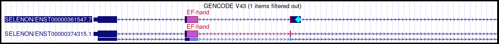

Decorators provide a way to augment some tracks by highlighting regions of individual transcripts and associating glyphs with them. This feature can be used in both custom tracks and track hubs.
In this example, the position of an EF-hand domain is highlighted in three transcripts of the SELENON gene in the human GRCh38/hg38 genome assembly. In the top transcript, the presence of a cyan diamond also marks the position of a selenocysteine.
Decorators can be added to BED 12+, bigBed, PSL, and bigGenePred tracks. To add decorations to a track, the decorations must first be stored in a separate bigBed file that includes extra fields to identify the decorated items. The track settings for the track must then be modified to include a pointer to that bigBed file; this can be done either in the track line for a custom track, or in the trackDb.txt file for a hub.
At present, we only support a single decorator per track, but we anticipate supporting multiple decorators in the future. For now, all decorator settings must use the prefix "decorator.default".
track testTrack
type bigBed
bigDataUrl https://genome.ucsc.edu/goldenPath/help/examples/decorator/main.bb
itemRgb on
The above trackDb statement provides a basic entry for bigBed track. To add a decorator to
this track, we can start by adding decorator.default.bigDataUrl as a setting, which will
point to the bigBed file containing decorations.
track testTrack
type bigBed
bigDataUrl https://genome.ucsc.edu/goldenPath/help/examples/decorator/main.bb
itemRgb on
decorator.default.bigDataUrl https://genome.ucsc.edu/goldenPath/help/examples/decorator/decorations.bb
Other settings are available to further configure decorators. Each may be applied to the
decorator instead of the primary track by prepending "decorator.default." to the setting. For
example, to set up a filterValues filter on the "keywords" field of the decorator, allowing the
user to filter to any combination of three classes "Type1", "Type2", and "Type3", the following
trackDb entry could be used.
track testTrack
type bigBed
bigDataUrl https://genome.ucsc.edu/goldenPath/help/examples/decorator/main.bb
itemRgb on
decorator.default.bigDataUrl https://genome.ucsc.edu/goldenPath/help/examples/decorator/decorations.bb
decorator.default.filterValues.keywords Type1,Type2,Type3
Please note that this would also require building an extra keyword field into the decorator
bigBed to hold those values. A full list of supported decorator settings is available in the
trackDb documentation, while the next section discusses how
to build a decorator bigBed file.
A decorator bigBed file, which contains decorations for annotating another track, is very similar to our standard bigBed file format. The only difference is the addition of some extra required fields, which describe how each decoration should be drawn and what item within that other track it annotates.
The full .as format for decorator bigBed files is as follows:
string chrom; "Chromosome (or contig, scaffold, etc.)"
uint chromStart; "Start position in chromosome"
uint chromEnd; "End position in chromosome"
string name; "Name of item"
uint score; "Score from 0-1000"
char[1] strand; "+ or -"
uint thickStart; "Start of where display should be thick (start codon)"
uint thickEnd; "End of where display should be thick (stop codon)"
uint color; "Primary RGB color for the decoration"
int blockCount; "Number of blocks"
int[blockCount] blockSizes; "Comma separated list of block sizes"
int[blockCount] chromStarts; "Start positions relative to chromStart"
string decoratedItem; "Identity of the decorated item in chr:start-end:item_name format"
string style; "Draw style for the decoration (e.g. block, glyph)"
string fillColor; "Secondary color to use for filling decoration, blocks, supports RGBA"
string glyph; "The glyph to draw in glyph mode; ignored for other styles"
A copy of this file can be found here.
Valid values for the style field are "block" and "glyph". Valid glyph entries include "Circle", "Square", "Diamond", "Triangle", "InvTriangle", "Octagon", "Star", and "Pentagram". If the text isn't recognized, Circle will be used by default.
The "decoratedItem" field (chr:start-end:item_name format) captures the link between the decoration and what item in the track is being decorated. The contents of this field must be the chromosome, BED start coordinate, BED end coordinate, and item name for the decorated item (note - these are 0-based half-open BED coordinates, not 1-based fully closed coordinates. That means they are the same values as should appear in a BED file describing the decorated item).
Here is an example of how to use this format. Consider a BED item like the following in our main track:
chr1 1000 2000 MyItem 0 + 1000 2000 0 2 400,400 0,600
We can take this BED file and construct a
bigBed from it as described in the bigBed
documentation. After that, if we wanted to add a decoration to this item that highlighted the region from
base 1200 to base 1800, we could create a corresponding item in a decorator bigBed file like this:
chr1 1200 1800 MyDecoration 0 + 1200 1800 255,0,0,255 1 600 0 chr1:1000-2000:MyItem block 255,0,0,128 Ignored
The first color, 255,0,0,255 specifies that the decoration outline will be in solid red (255 red,
0 green, 0 blue, 255 alpha). The second color 255,0,0,128, specifies that the interior of the
decoration will be shaded toward pure red, but that the decorated item will still be partially visible behind it
(due to the alpha value of 128). The chr1:1000-2000:MyItem entry describes which item in the main
track is to be annotated. In this case, it's an item with the name "MyItem" that spans chr1 from base 1000 to
base 2000. The final Ignored value is not used here because we are creating a block decoration
(a decoration that annotates a range of bases).
To add a glyph decoration to our file that marked the final base of the transcript with a green circle, we could also include the following line in our BED file of decorations:
chr1 1999 2000 MySecondDecoration 0 + 1999 2000 0,255,0,255 1 1 0 chr1:1000-2000:MyItem glyph 0,255,0,255 Circle
If we store both of those decorations in a file named input.bed, we can
then build a bigBed file from it with the following command:
bedToBigBed -type=bed12+ -as=decoration.as input.bed hg38.chrom.sizes decorations.bb
Additional fields can also be added onto the end of the .as file if you desire, though they will not
be used at all by default. Adding fields allows you to set up custom filtering of which decorations are
displayed. For example, to include a "keywords" field you could add the following line to the end of
the decoration.as file:
lstring keywords; "Keywords associated with the decoration"
You would then modify your input.bed file to include an additional field at the end of each line, detailing which keywords
apply to each of the decorations.
chr1 1200 1800 MyDecoration 0 + 1200 1800 255,0,0,255 1 600 0 chr1:1000-2000:MyItem block 255,0,0,128 Ignored Type1
chr1 1999 2000 MySecondDecoration 0 + 1999 2000 0,255,0,255 1 0 1 chr1:1000-2000:MyItem glyph 0,255,0,255 Circle Type2,Type3
After rebuilding the decorations.bb file, you could then use the filterValues version of the trackDb
entry from the previous section to create your track.
If you get an error when you run the bedToBigBed program, please check your input BED file for
data coordinates that extend past the end of the chromosome. If these are present, run the
bedClip program
(available here) to remove the problematic
row(s) in your input BED file before using the bedToBigBed program.